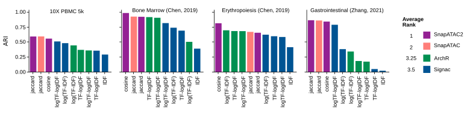
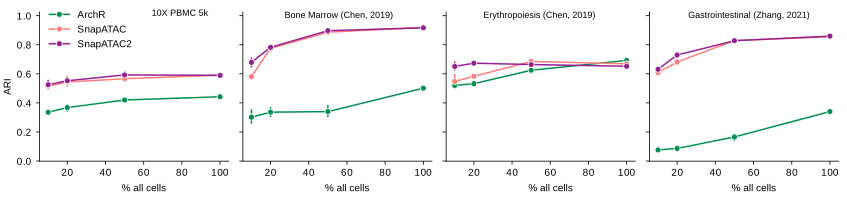
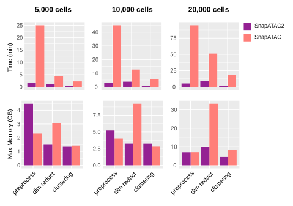
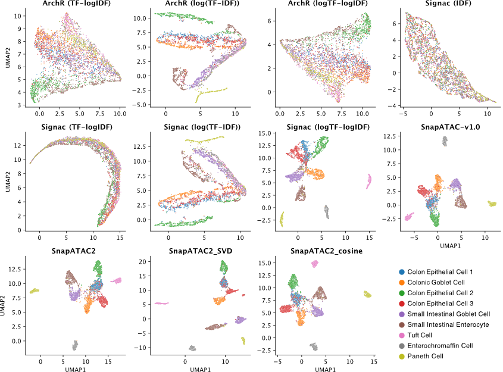

SnapATAC2: Single Nucleus Analysis Pipeline for ATAC-seq
SnapATAC2 is the successor of the SnapATAC R package, featuring:
Faster and less memory usage, scale to >1M cells.
Improved dimension reduction and sampling algorithm.
Benchmark
Impact of dimension reduction algorithms on clustering accuracy
Same matrices were given to each algorithm to perform dimension reduction, the result was then input to the same clustering procedure (KNN + leiden) to get clusters and compare with ground truth. During the clustering step, we tested a wide range of parameters for each method and the best outcome was recorded.

Subsampling test

Running time and space complexity

Example visualization
